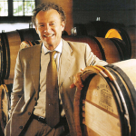

Do arquivo RENDEZVOUS
A história por trás das imagens
Château Margaux por Paul PONTALLIER
O Vinho do Château Margaux por Paul PONTALLIER
Semana Primeurs no Château Margaux
O Ano de 2012 no Château Margaux
Degustando Château Margaux com Paul PONTALLIER
Château Margaux mantém, como nenhuma outra propriedade no mundo, o culto à elegância e ao refinamento, e Paul PONTALLIER é o Presidente e o embaixador deste refinamento e deste encanto. Personagem conhecido mundialmente, mesmo por quem não se interessa muito por vinho, Paul é extremamente simples e ama compartilhar sua paixão pelos vinhos do Château Margaux.
Em uma série de vídeos no Château Margaux, Paul PONTALLIER, fala dos Châteaux seu terroir, sua história, sua arquitetura e da safra de 2012.
Conheça mais sobre Paul PONTALLIER e o Château Margaux
Texto de arquivo · 2013
